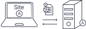

Un cookie est un petit fichier stocké par un serveur dans le terminal (ordinateur, téléphone, etc.) d’un utilisateur et associé à un domaine web (c’est à dire dans la majorité des cas à l’ensemble des pages d’un même site web).
Des cookies sont lus ou déposés lors de l'utilisation d'un terminal.
Ils permettent de collecter des données de navigation et
d'identifier une personne lorsqu'elle consulte un site web, une application mobile,
un logiciel...
Les cookies peuvent être déposés de deux façons différentes :
1. Les cookies « first » (internes), déposés par le site consulté, pour son domaine.
 2. Les cookies « third » (tiers), déposés ou lus sur
d'autres domaines que cleui du site consulté et gérés par des tiers. Les cookies
tiers sont souvent utilisés à des fins publicitaires.
Dans tous les cas, les cookies peuvent être classés dans deux catégories principales :
1. Les cookies nécessaires au bon fonctionnement du service ou l'authentification de l'utilisateur afin de rester connecté. Ils ne sont pas soumis au consentement de l'utilisateur
2. Tous les autres cookies, qui permettent de mémoriser des données et de créer un profil détaillé de l'utilisateur, faire du suivi de navigation, par exemple, grâce aux produits regardés, les liens cliqués ou le temps passé sur une page. Ces cookies sont soumis au consentement de l'utilisateur qui est libre de les accepter ou non.
Qu'il soit cookie « First » ou un cookie « Third », la finalité du cookie est le seul critère pour savoir si un consentement est nécessaire.
Le consentement auquel sont soumis certains cookies nécessites d'informer l'utilisateur sur l'utilisation des cookies. L'information se traduit pas la présence d'un bandeau cookie lors de l'ouverture d'une page web. L'information doit être de bonne qualité et compréhensible par toutes et tous pour que le consentement soit considéré comme valide.
Le bandeau cookie pourrait être structuré de la sorte :
Continuer sans accepter
Tout autre acte que « accepter » doit être considéré comme un refus.
Dans cet espace, doivent apparaître obligatoirement :
- Pourquoi les cookies sont déposés (on parle de finalités d'usage).
- Qui dépose et utilise les cookies (on parle des responsables de traitement, des partenaires ou de tout autre tiers).
- Comment maîtriser ses données, notamment en pouvant retirer son consentement à tout moment, de façon accessible.
En savoir plus
PARAMÈTRES
ACCEPTER
REFUSER
Paramètres : Possibilité de choisir finalité par finalité
Accepter : Les cookies soumis au consentement peuvent être déposés seulement après cette action
Refuser : Aucun cookie soumis au consentement ne peut être déposé